Devlog Nine Overview
I really wanted to start working a lot more on this project, but eh; life can easily get in the way. I am gonna try to be better about that though, because I really love working on this game.
Now then! This update is a beautiful one. I finally have stairs and slabs! This will really improve what I can build within the game. There is problems with it though right now. Currently, you can only place the slabs on the top of a block. Basically I have just bottom half slabs. Which isn't such a big issue right now, but will be in the future. Honestly, I would've fixed that for this update, but I really just want to get something out there. So just assume that's something I've fixed in between updates in the future.
Main Features
Let's talk about the slabs first. As you may have noticed, I am terrible with art, so the UI icons for them is just the full block ones but smushed. Which I thought was a little funny. The slabs basically work exactly like a full block, except that I'm just drawing half the block. Then of course telling the top face of the block to be lower. There isn't really anything too complicated to talk about here. Thankfully on my behalf.
Now let's talk about the stairs. This was a little bit more complicated than a simple slab. And you may have noticed that they don't look exactly the same as they do in Minecraft. That's because of the way I made how the non-cube blocks work. Basically all the sides still have to be flat. So, it's not really 'stairs', but whatever. I want to try and change this current edition of the stair to a ramp block, and eventually add a proper stair block in the future. Problem though: I have no idea how I might do that. And it's probably really simple and I just haven't thought of a good idea yet.
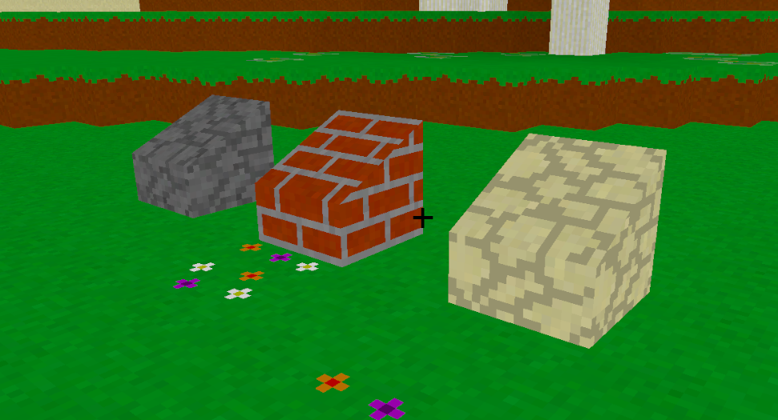
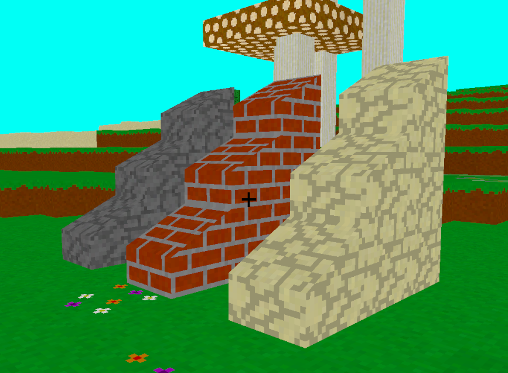
I just wanted to sneak in a tid bit here. This isn't in the game since I'm still deciding if I want it, but vertical slabs should be pretty easy to add into the game with how I have the stuff set up. It would just add so many more blocks, and it'll deter from the Minecraft essence a little. But it is possible. On another note, I should also be able to add more types of non-full-block shapes. Like maybe I can finally add a torch? Or maybe even wall blocks? Ha! I already added in wall blocks!
Like everything I add into the game, there is a problem with the walls. And that's just that the don't connect to anything like they do in Minecraft. The reason for that is the same as with the stairs. To have connecting walls, I would have to make a block that doesn't have flat sides. At least for the ends of the connecting wall segments. But for now, the walls are pretty good at what I kinda wanted them for, and that's pillar type blocks. Check out what I mean.
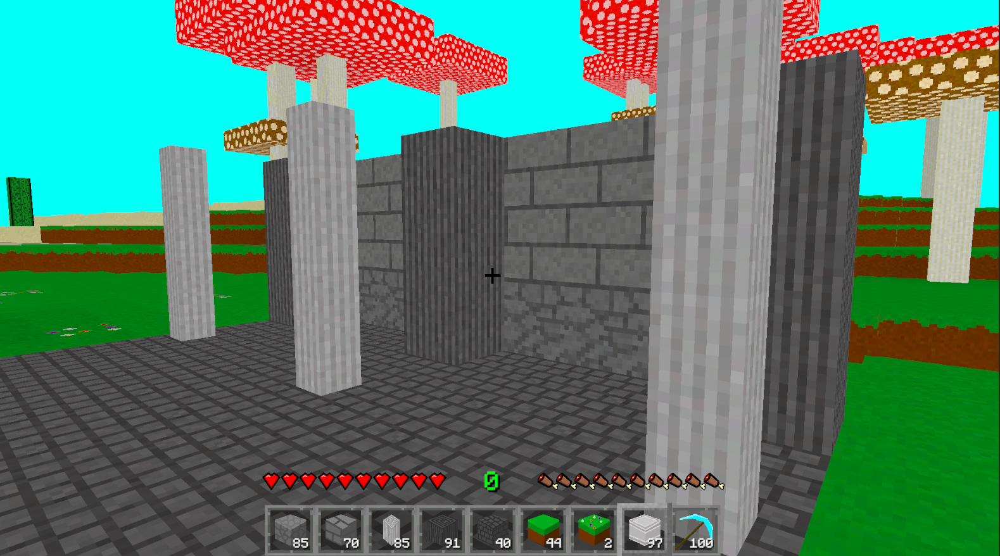
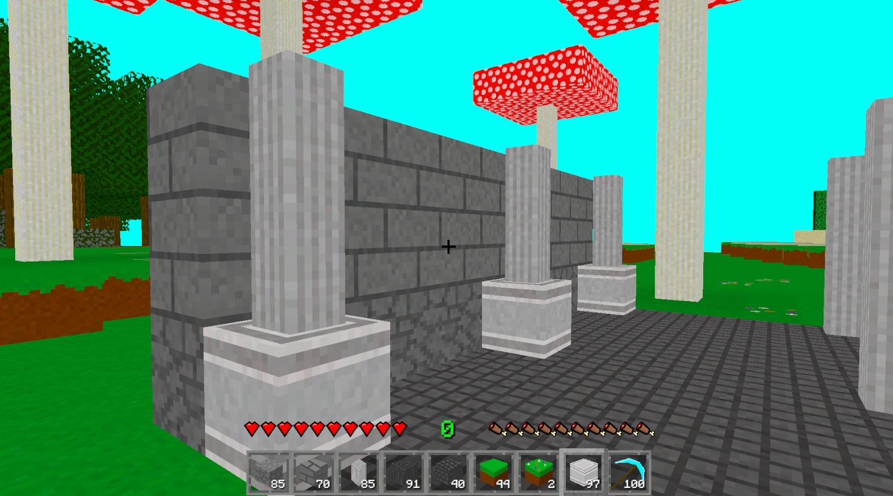
Blocks
Outside of all the slabs/ stairs/ walls I put into the game, I still did add a couple of new full blocks to the game. Because that's just my style. Also watch me forget to take a picture of some of the new blocks and stuff I added. There was a lot of new stuff.
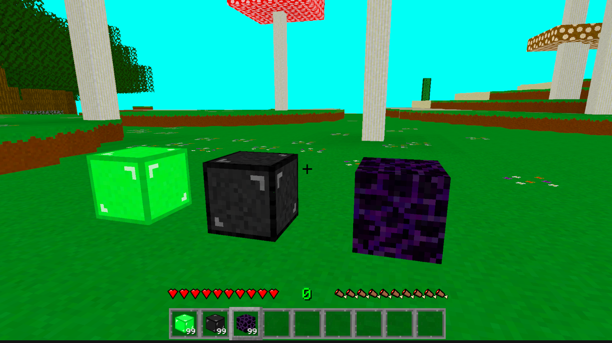
The above is just a picture of the completely new blocks unrelated to anything else. But I added a lot of new blocks and stuff. I did good. Now here is some pictures of all the slabs and stuff together with their full block counterparts.
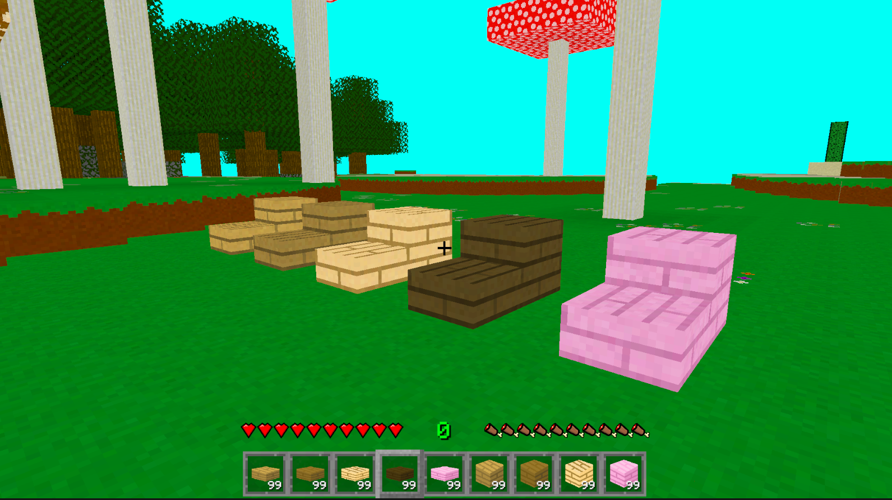
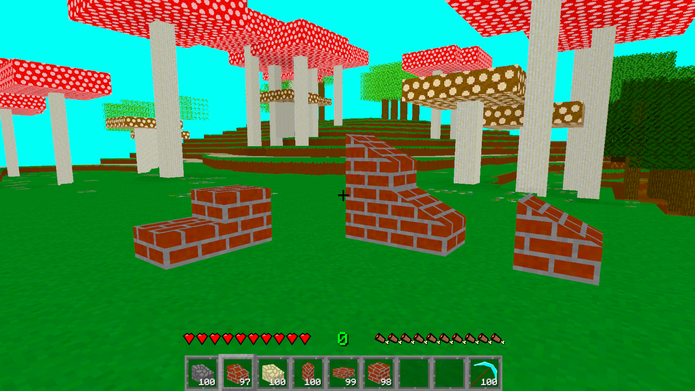
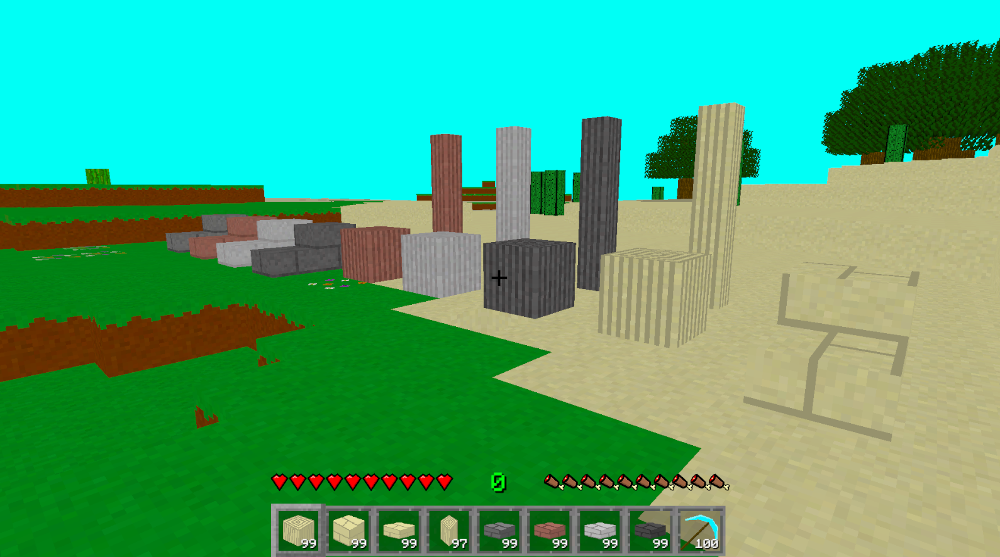
Oh! I also added all the new set blocks to the Inferno Stone blocks. I think I'll also do the same thing to Blackstone and maybe a few of the other blocks along the line. When I feel like going through that effort.
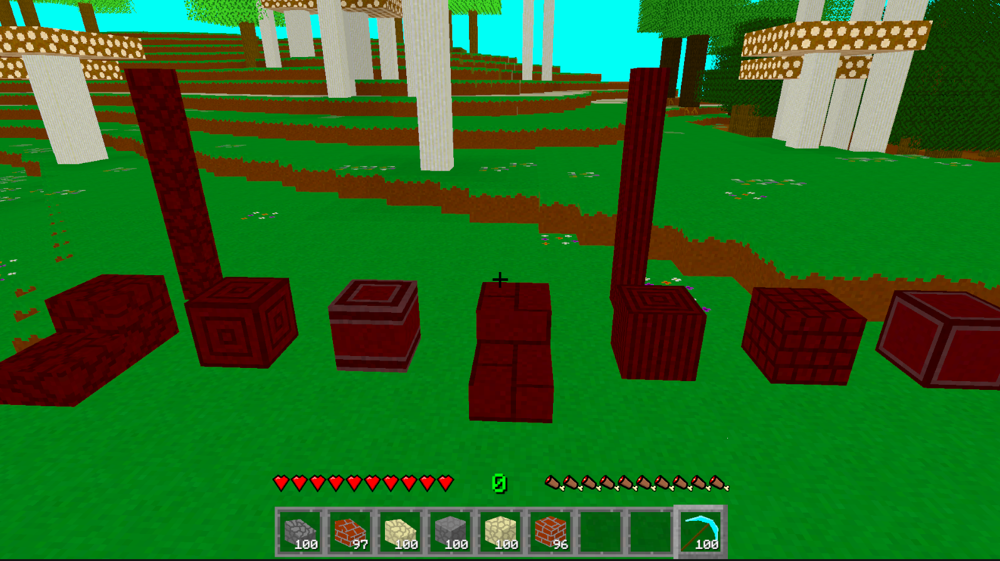
Items
This update also came with some new items. I should note that one of them is a tease for a future update, but I'm not gonna say which one or how it's a tease. I'm also just gonna show off the inventories and let you figure out what the items are, and which ones are new. Because I'm just that active.
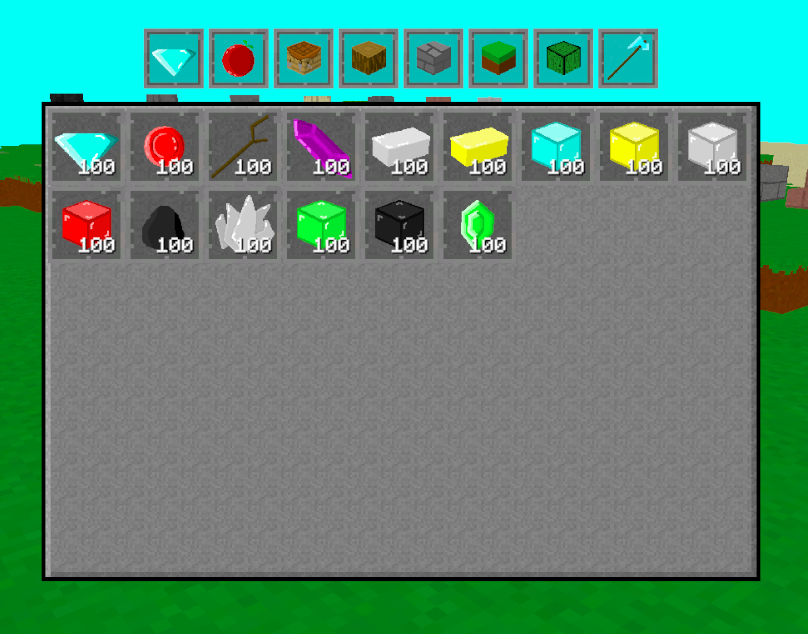
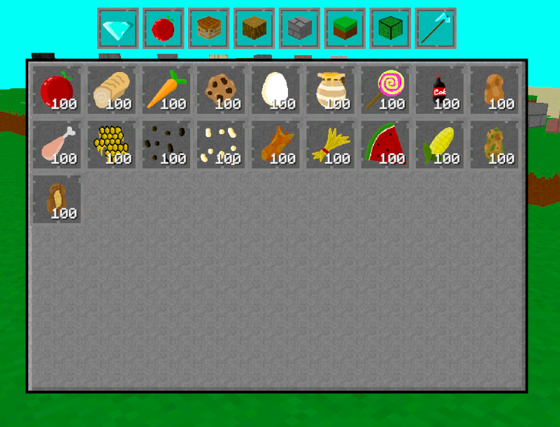
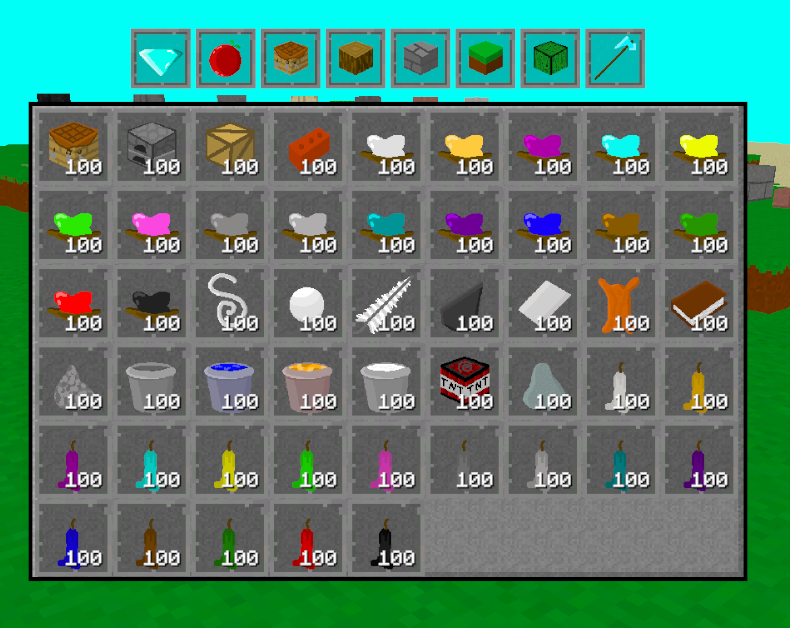
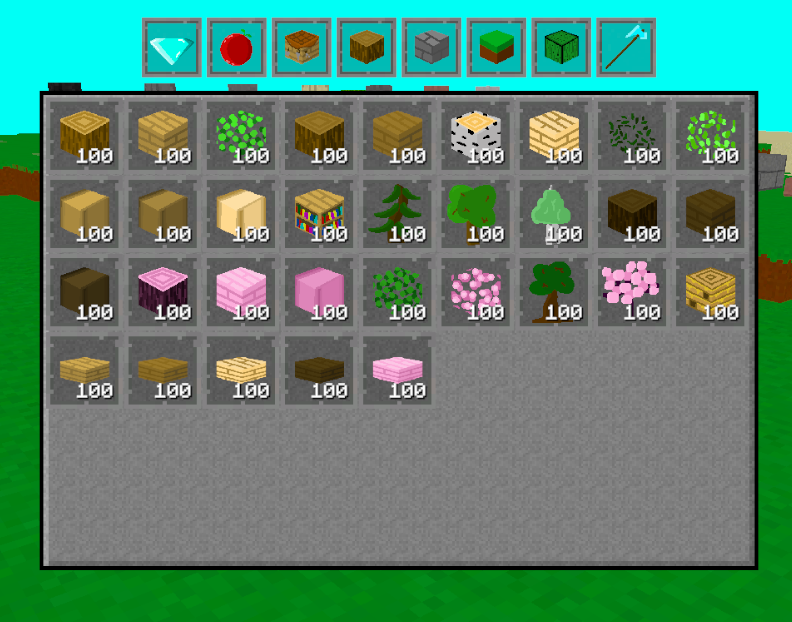
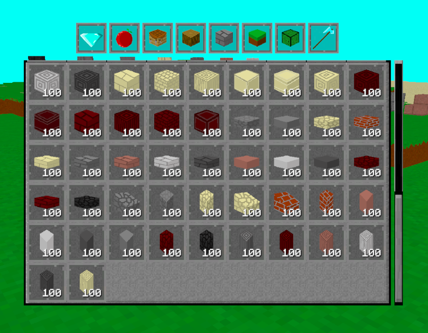
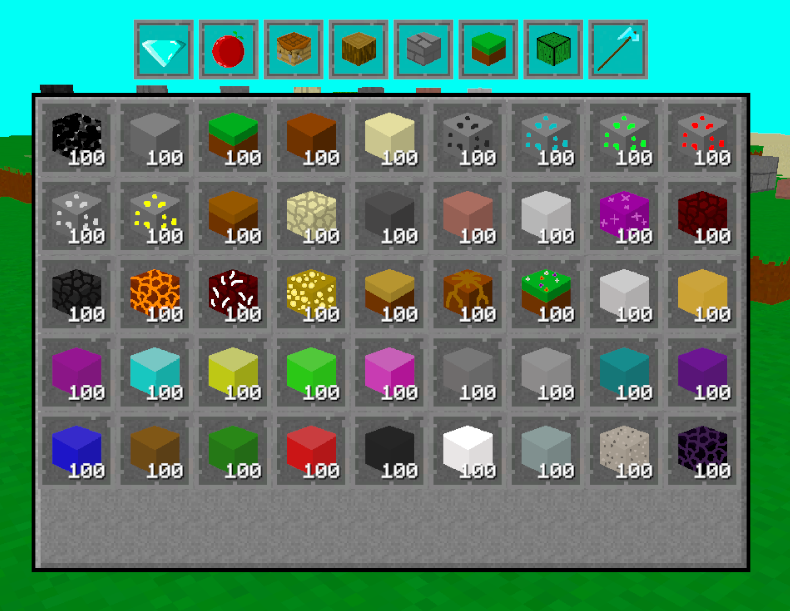
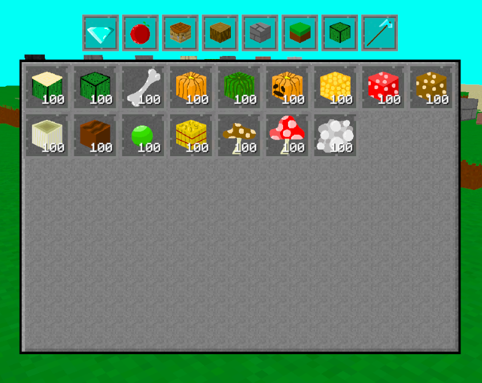
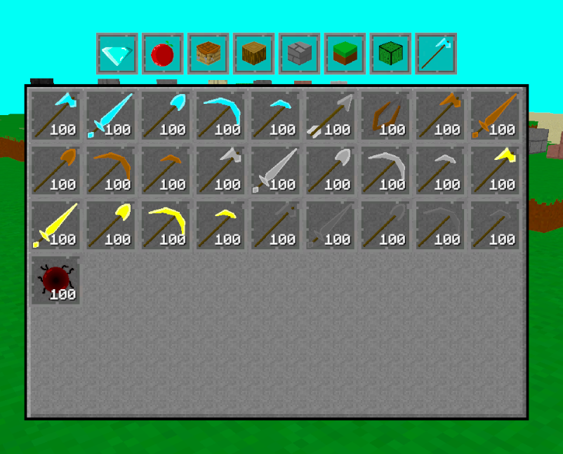
And don't even worry about how unorganized all the blocks are. Why would all the wood block types be together with their respective wood blocks? Why would all the stone types be together with their respective stone blocks? Or all the dirt types together, or even to just have the diamond next to the diamond block. I'm just thinking of a easy solution that won't involve me going through them all one by one and thinking how they should go together nicely. That would just be unbelievable annoying.
Conclusion
I'm very happy with this update, and the work included within. I do wish I did more, but like I said earlier in the devlog: I just really want to get an update out there into the world. But regardless, this update does add a lot more building options into the game. Which, of course, I am very happy about. Since this game is basically centered around building. One of the main reasons I play Minecraft.
Now I have to wonder what I am going to add into the next update. What could it be? I have some ideas, so you should really look forward to that. There has been a lot of glitches popping up surrounding certain stuff, so maybe it's time I rework some systems and improve upon them. We'll see.